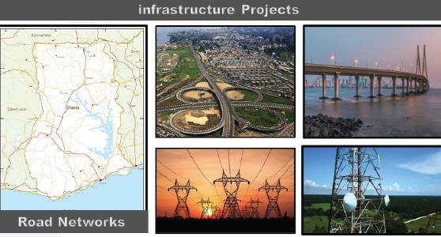

Supporting country with vital information for better agriculture productivity - internal consumption or exporting activities:
Land management is a national problem in all countries. taken serious and important steps to address the phenomenon of encroachment on state lands, aiming to preserve these lands for future generations through our solutions.
The Change Detection and Monitoring System for State Land Encroachments collects terabytes of satellite imagery covering huge areas across the country. Then, it processes the data and analyzes the imagery using our leading partners Geospatial technologies.
On premises automated system will be delivered, operation and admin by Country staff.
Supporting the mining sector with its plans and tools to:
Extracting information & selecting criteria from satellite imagery, based on location analysis, gives planners guidance where to build new services and where to extend an existing ones
In addition to the role played by the network analyst in the sustainable development of infrastructure elements, which appears manifest in the choice of sewage networks, and coordinate them with transport networks, so that they achieve the highest efficiency and sufficiency of the region.
Providing construction companies with essential information:
Simulating construction designs, plans in order to analyze risks(steep slopes, flooded areas,...) and needs(Cut & Fill calculations) before moving to implementation phase.
Follow up construction-projects phase by phase using satellite imagery, measuring & verifying how far the implementation plan is, compared with the master plan, reporting the production rates and implementation statistics to the project managers / decision makers.
Support the government with monitoring aids that fulfill the environmental protection measures based on automated activities and technologies integrated with satellite imagery to conserve the environment, monitor pollutants, and provide quick reports as:
The project aims to update the existing 3D base maps for Egypt with scale 1:2500 to have a complete and reliable base maps of all the governorates to be later integrated with the National Spatial Data Center (NSDI) with the following key points:
Carry out the survey service by accredited specialists for the citizens who obtains a documented certificate for surveying that conforms to the standards required for the interest of the real estate registry and documentation, the survey is carried out for each of (Residential units (apartments) / others, Lands measured in square meters / acres, Commercial Units, Administrative or Entertainment or Cultural Units.
In this project the digital transformation for Sheraton club was achieved and a database was created to feed the portal with group of applications to serve the membership management systems, the ERP system, the mobile application and website including the hardware for datacenter and implementation.
In this project the digital transformation on GARPAD archive was achieved and a geodatabase was created with al lands they manage to feed the GIS geodatabase for planning.
Automatic transformation from CAD to GIS for 10,000 drawings.
Building the E-Portal website for Ministry of Agriculture and updating existing database as well as sharing knowledge and on job training for MOA employees to be able to handle the website by their own.
Building strategic crops spectral library using Spectroradiometer and field samples collection and historical satellite images data including:
Odoo is an open-source suite of business applications that covers a wide range of needs for companies, including accounting, inventory management, sales, human resources, project management, and more. It's designed to be modular, so you can start with just a few apps and add more as your business grows or your needs change. Odoo is aimed at providing a comprehensive and integrated solution for managing various aspects of a business, making it easier to streamline operations and improve efficiency.
A website is a key component of the company. Key components of a website (Company name - Hyperlinks - Web pages - Web server). A website is a collection of interconnected web pages that are accessed through Company name. providing information, services, or products to visitors.